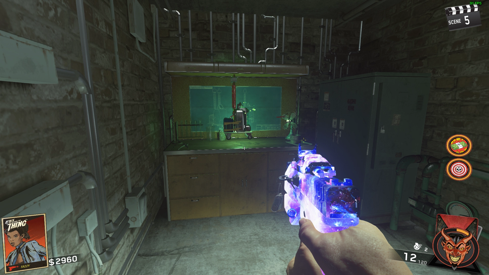
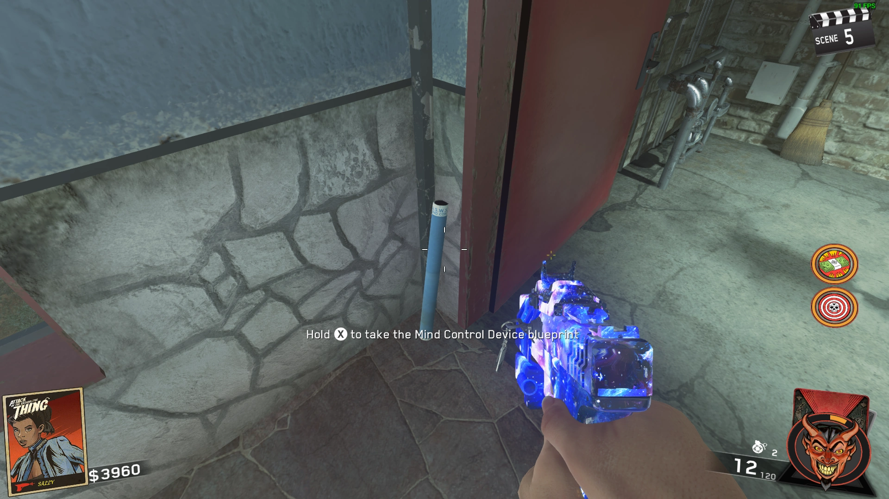
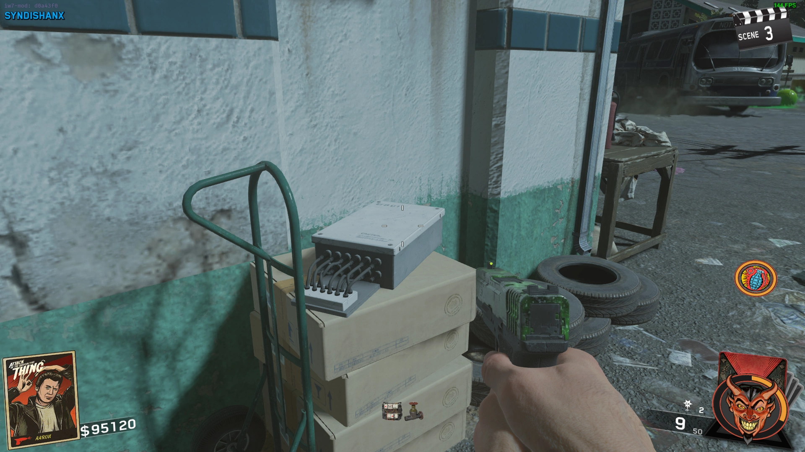
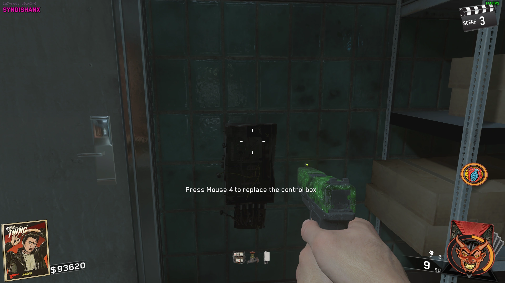
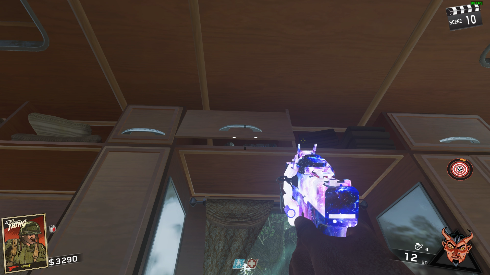
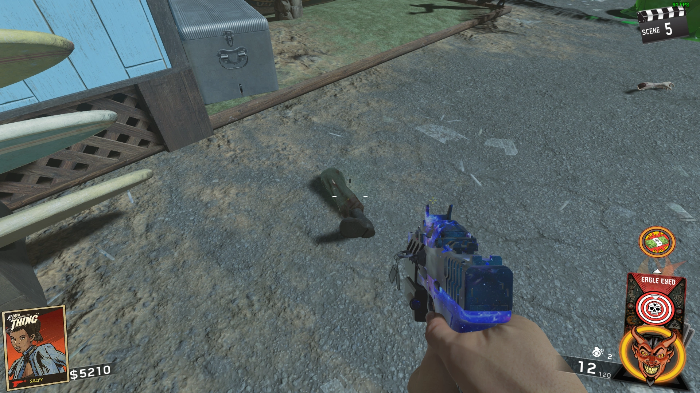
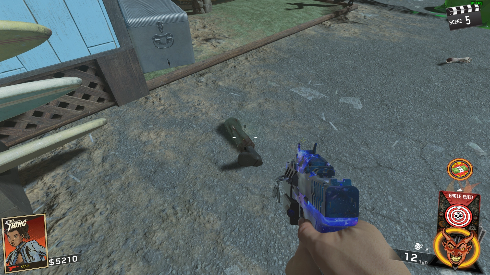
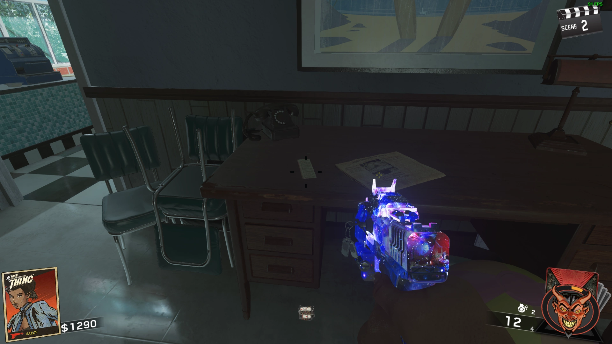
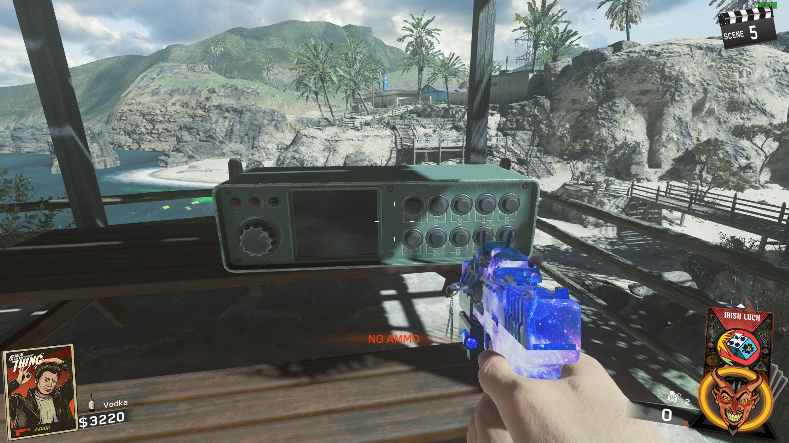

Buildables
Seismic Wave Generator

Violet Ray Device
Hypnosis Device
Mind Control Device
 

Chemicals


Power
Grab the Power Swirch on the Beach next to the OSA in a Zombies Hand sticking out of the Ground, then Place it at the Power Substation

Traps
Grab the Part on a Box near the Gas Station and Fix the Freezer Trap
 
Grab the Part on a White Truck near Elvira's Studio and Fix the Pool Trap
Turn on the Power
Grab the Part from the Trash Can near Power Substation and Fix the Power Trap
M.A.D. Upgrade
Obtain the Crowbar in the Motel Maintenance Room and Melee Open the Panels around the Map to Unlock the Attachments


Pack-A-Punch
Go to the Ice Cream Shop near Spawn and get the Book from the Safe next to the Skullhop Machine
Talk to Elvira and give her the Book, and she will give you a Vial
Kill Zombies with the Cleaver to fill the Vial, once it's full take it to Elvira and she will follow you
Take her to the Blue Circle outside the Studio next to the Mystery Box and she will open a Portal to PaP

The PaP Portal will move around the Map, Look in the Sky to see where the Portal is
Double Pack a Punch
Obtain the Crowbar, got to PaP, press the Button on the Wall to teleport into the RV
Jump and Melee the Slightly Opened Cabinet with the Crowbar and pick up the Alien Fuses

Fill up Elvira's Vial by getting Cleaver kills
Go to the Power Substation, and place the Alien Fuses on the Ground near the Electric Trap and activate it, once it's done you can pick up them up
Go to PaP Machine and install the Fuses
Ghost and Skulls
Shoot 5 Skulls around the Map


Go to the Gas Station and grab the Yellow Pump on the Ground
Go to the Puddle of Toxic Waste near the Ice Cream Shop, place the Pump in and wait for it to fill completely, then pick it up
Go to the Motel Pool and place the Pump in the Water, obtain the Gas and kill exactly 16 Zombies with the Generator Trap
Go to the Ice Cream Shop and take note the word written on the Wall
Go to the Playground, 4 Letters will spawn at the Swings
Interacting with the Letters at the Swings will change which letters appear on the Drive-In Screen, spell out your word from the Wall

Go to the RV Park and interact with the Paper on the Table

Obtain the Pump from the Pool, go to each of the 4 Willard Wyler Portraits around the map, activate them and place the Pump on the Ground in front of them, then Melee the Pump to release the Demons
Shoot the Demons until the Shield disappears, repeat this for each of the 4 Portraits


Obtain the M.A.D. and equip the Plunger to it, go to the Skullhop Machine in the Ice Cream Shop and shoot a charged shot at it (If you lose the Game, repeat this)
Interact with the Machine to Play
Stand on the Platform matching the Color on the sides of the Skulls
Entangle the Blocks floating in the air and shoot the Block at the Skulls until all the Skulls are gone
When you Complete it, you will get Perkaholic
Main Quest
Build the Zombie Body in Spawn
-Go to PaP, activate the Button on the Wall, you will be teleported to the RV, pick up the Head on the Dashboard
-Obtain the Crowbar, repair and activate the Deep Freeze Trap, melee the Carcass in front of the Torso, it will explode, then grab the Torso that was behind it
-Grab the Left Arm from the Firepit in the RV Park
-Build the Seismic Wave Generator, go to the Beach and place it near the Arm in the Ground that had the Power Switch, then pick up the Right Arm
-Obtain the Cleaver, Kill a Radioactive Zombie with it, then pick up the Left Leg
-Go to the back of the TV Station, and grab the Right Leg hanging in a Tree by throwing a Cooked Grenade at it, then pick it up
-Go to the Bathroom in the RV Park, melee the Mirror with a Crowbar to Break it and pick up the Glass Shard
-Obtain the Crowbar, go to the White Car in front of the Gas Station, melee the Passenger Mirror and pick it up
-Summon Elvira, while she is away from her seat the Hand Mirror and steal the Hand Mirror from her Couch
 

Obtain the Scantron from Desk in the Ice Cream Shop, place it in the Machine in Spawn, 9 Numbers will Flash quickly, using Trial and Error, activate every Combination until you succeed


(The only Numbers used in the code are 3, 4, 5, 6, and 8)
Input the Number again, but backwards to activate the Death Ray killing the Zombie and dropping a Key, pick it up
Obtain the Nuke Parts


Obtain the Crowbar and look under the Desk in the back of the Market to see 4 Numbers, set 4 Pressure Gauges around the map using the Crowbar


Once you have set them, the Safe in the back of the Grocery Store will open, pick up the Nuclear Codes
Take note of the Code, as you wont be able to check your Inventory during the Input process
Go to the Gas Station and open the right Garage Door, find and place the Chemistry Lab Pieces in the Garage

Find your M Symbol's Number above the Radio in the Motel Offices
Find your O Symbol's Number is by doing the following
-The Symbols will have an Equals Sign when in Normal Colors
-Change the Color by going to Elvira's Studio and interacting with the Machines
-Go to the Symbols around the Map and see which ones have a Not Equals Sign after the Colors
-The Symbol that doesn't have a Not Equals Sign in any Mode is your Numbers


Multiply what your O is by what your M is and check Elvira's TV, change the Color to what the TV says
Example: Your Equation was 11 x 10, so your Number is 110, Elvira's TV shows that the Color is Green
(Stay on this Color Mode until you have created the Final Chemical)
Obtain Batteries from Zombies and place them in Radios at the Power Substation and in the Motel Office
Listen to both Radios. One of them will explain what Chemicals work with the Nuke
You will be told which one he knows will be able to destroy the Radioactive Thing
Place down the Ingredients, and input their Number found by adding the top and left Number of each Ingredient's Chemical Diamond and subtracting your O Symbol
Example: Combine Quarters and Racing Fuel to make Formaldehyde
-Look around the Map for the Chalk Boards containing Quarters and Racing Fuel
-Quarters has 6 and 2 as the top and left Numbers, and Racing Fuel has 3 and 4
-Add them together to get 15 and subtract your O Symbol's Number which in this case is 4
-Input 11 into the Machine to complete the Chemical Reaction
The Diamond Numbers will change in the different Color Settings and are random every game


Once you have you Final Chemical, put the Parts onto the Nuke, then add the Chemical to the Nuke
**PREPARE FOR THE BOSS FIGHT**
Wait for it to Charge up and have All Players interact with it again
You will be teleported into the Boss Fight, push the Nuke down from the top of the Stream to the Beach
The Radioactive Thing will be launching Crogs and Fireballs at you
Once the Nuke is at the Beach it will go into the Radioactive Thing
Survive and use the Death Lasers to destroy the Core on the Radioactive Thing's chest while he's attacking
Once you damage it, it will be opened indefinitely so keep firing the Lasers at it
Once you do enough damage to the Radioactive Thing he will stop attacking you
Have All Players interact with the Nuke Launcher on the Beach and Radiation will crawl up the beach and the Radioactive Thing will launch Crogs at you
Have All Players make their way up the Beach until you reach the Bridge, survive against Zombies and Crogs until the Radiation makes it's way up to you
After a certain amount of time the Radioactive Thing will launch a Laser Beam and create an Obstacle Course
Go through the Obstacle Course until you reach the Nuke launcher at the Beach and have All Players interact with it as fast as possible
When all Players have interacted with the Nuke you will be brought into the belly of the Radioactive Thing
All Players must input the Code that you got from the Sheet in the Safe (Take your Time)
Each Player gets 3 Attempts to input the Code (If you fail, redo the Obstacle Course)
Pick up the Soul Key, and the Ending Cutscene will Play

You can Play as Elvira by Entering a Code using the D-Pad in the Lobby Quickly
Down, Right, Down, Left, Up, Right